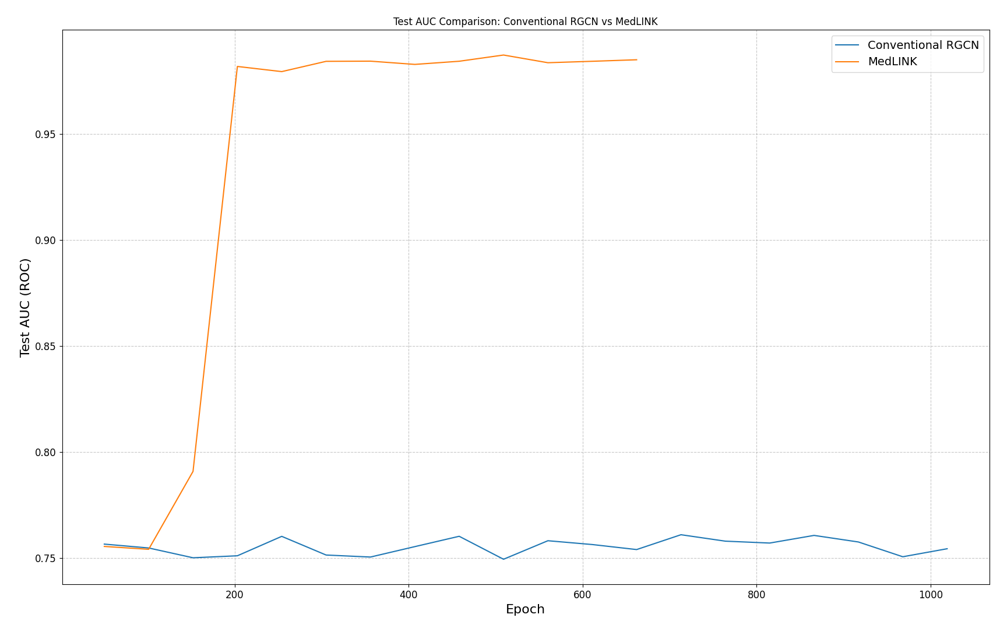
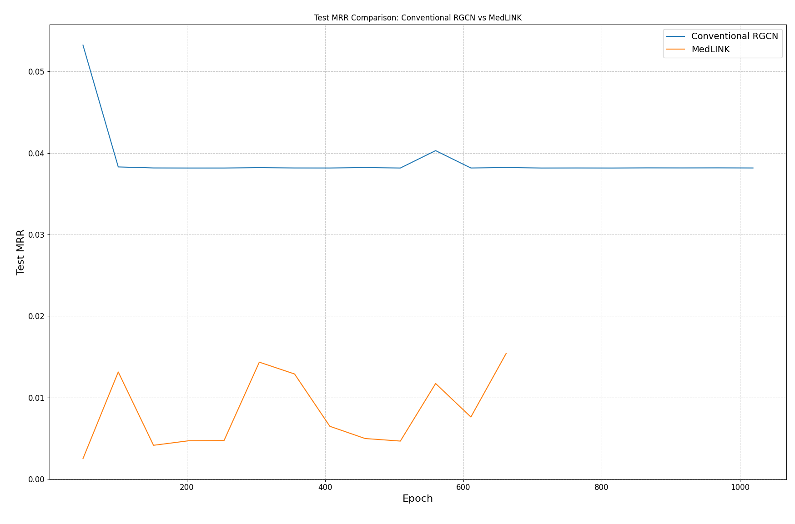
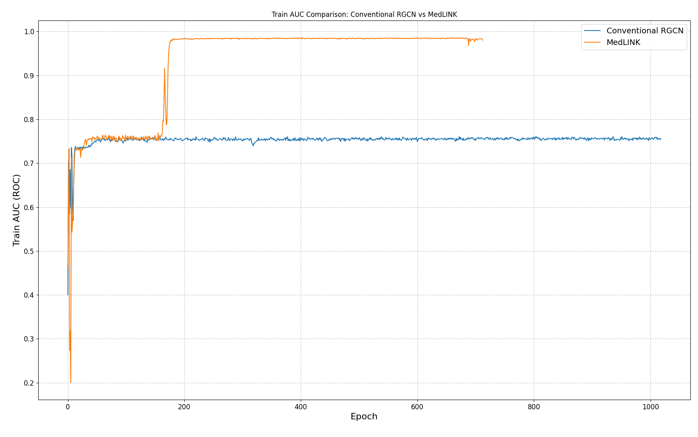
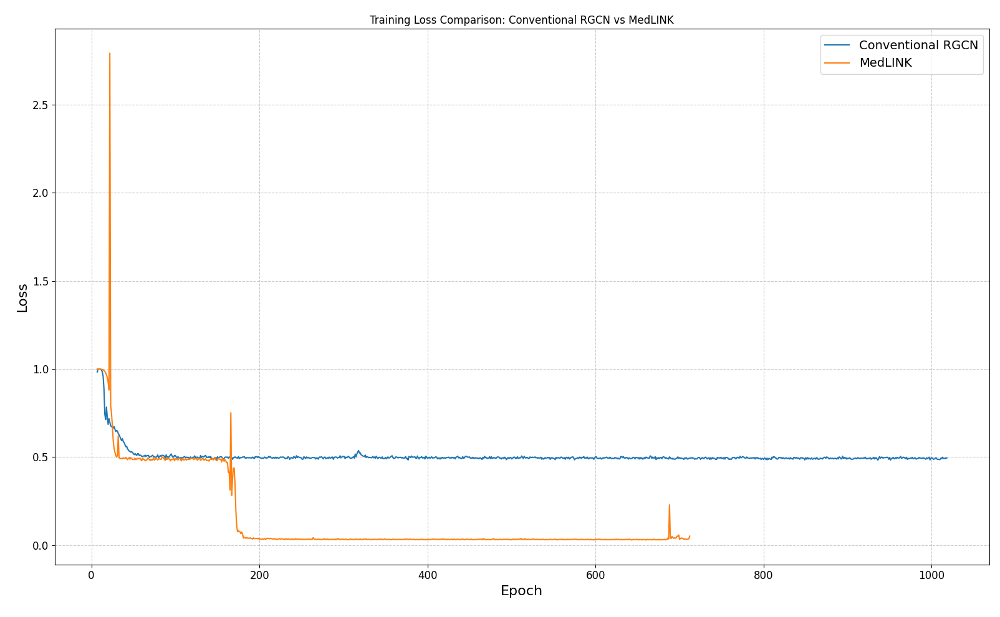

Hybrid RGCN/GAT link prediction for drug–disease discovery
The published MedKG study in Molecular Diversity details how the MedLINK hybrid encoder (RGCN + GCN + GAT) recovers disease–drug relations using the curated exports provided here, with reproducible scripts and metrics tracked under metrics/.
Nodes
51,236
Drug + Disease
Edges
46,804
Indications & contraindications
Relations
3 types
Indication, off-label, contraindication
Why MedLINK?
- Reproducible CSV exports and training scripts.
- Comparisons against vanilla RGCN baseline.
- Metrics logged to `metrics/` (CSV + PNG charts).
Dataset snapshot
Summary derived from data/nodes_dd.csv and data/edges_dd.csv, matching the MedLINK dataset described by Kumari et al. in Molecular Diversity (2025).
Unique node labels
2
`Drug`, `Disease`
Unique relation types
3
`IS_AN_INDICATION_FOR`, `AN_OFF_LABEL_USE_FOR`, `IS_A_CONTRAINDICATION_FOR`
Largest relation
33,984
`IS_A_CONTRAINDICATION_FOR` edges
Metadata richness
JSON props
Drug nodes embed DrugBank annotations
Exports use Latin-1 encoding and embed rich JSON properties for downstream feature engineering.
Benchmark results
Performance comparisons are captured under metrics/ as CSV logs and publication-ready images.




| Model | Best Test AUC | Best Test MRR | Notes |
|---|---|---|---|
| Med-LINK hybrid (GCN + GAT + RGCN) | 0.9873 | 0.0154 | Significant AUC uplift with hybrid encoder as reported in Molecular Diversity; MRR remains low due to class imbalance. |
| Conventional RGCN baseline | 0.7610 | 0.0532 | Higher rank-based MRR but substantially lower AUC. |
MedLINK results in print
The hybrid model, dataset design, and evaluation protocol are documented in Molecular Diversity, providing an auditable benchmark for future graph learning research.
AUC values pulled from metrics/test_auc.csv; MRR values from metrics/test_mrr.csv.
Run the experiment
cd medlink
python link_prediction.py \
--epochs 1000 \
--use_wandb 0 \
--batch_size 1024Override arguments inside link_prediction.py (e.g., number of layers, hidden size, dropout) to reproduce experiments.
- Use
MEDKG_DATAto point at the folder containingnodes_dd.csvandedges_dd.csv. - Enable Weights & Biases logging by setting
use_wandbto1. - Saved models (`best_model.pth`) can be loaded to score novel drug/disease pairs via helper functions in the script.
- Evaluate additional metrics by extending the CSV logging in
metrics/.
Resources & extensions
Build on top of MedLINK or integrate additional graph learning tasks.
MedLINK README
Step-by-step instructions, model architecture details, and inference helpers.
Read guidePrimeKG connectors
Load open datasets into Neo4j/Nebula to expand the training corpus.
View connectorsCustom dashboards
Use `metrics/*.csv` with your favourite plotting tool to extend monitoring.
Use CSV logs